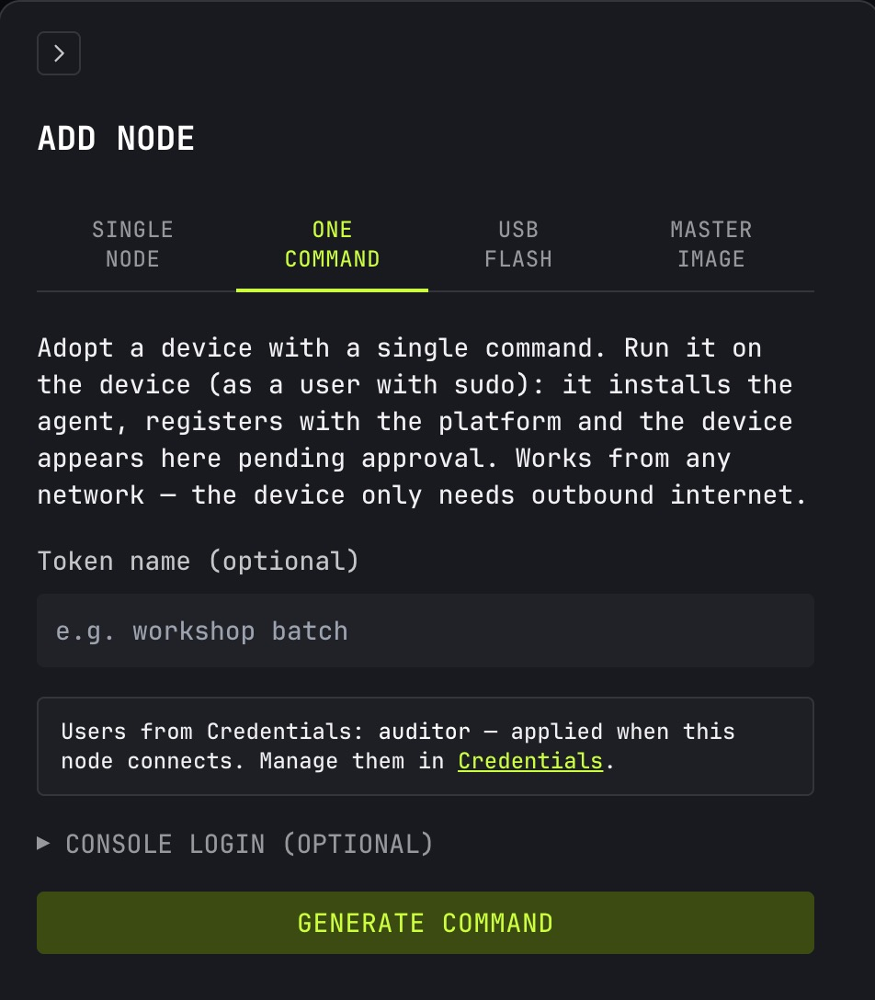
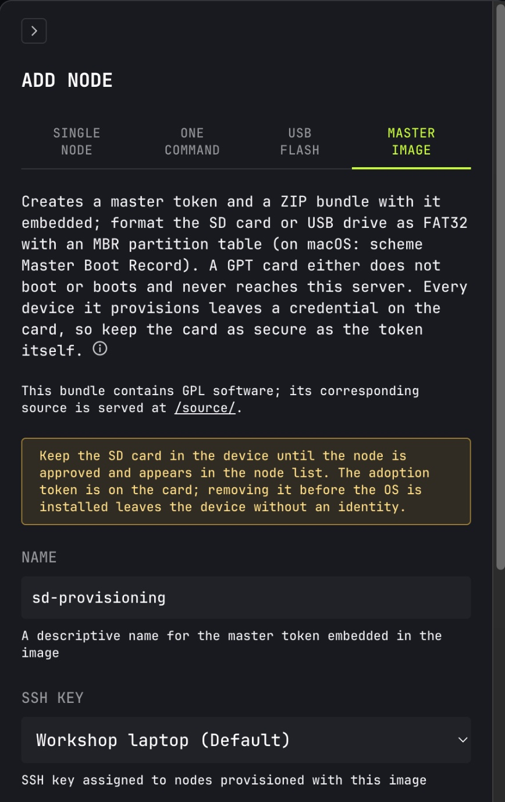

Adding a device
Turn a Raspberry Pi into a managed node, then approve it.
Adopt a device so it shows up in Nodes and you can manage it. Open Nodes, click Add node, and pick the tab that fits your device.
| Your device | Tab |
|---|---|
| Already runs a 64-bit Debian or Ubuntu | One command |
| A board you can connect over USB in boot mode | USB flash |
| Blank, and you can put a card into it | Master image (provisioning card) |
The device needs Ethernet and outbound access to the server on ports 443 and 50051. The USB and card ways bring their own recovery system, so you install an OS afterwards (Installing an operating system).
Run one command on a device that already runs Linux

- Open the One command tab.
- Type a Token name if you want one, such as
workshop batch. - Click Generate command, then Copy command.
- Run the line on the device as a user with sudo.
The script installs the agent and prints OK: agent connected. On a fresh system it first waits for the system's own package upgrade to finish and tells you so. The device needs arm64 with systemd, dpkg, curl or wget, and openssl.
The token works for 7 days and for several devices. You find it under Secrets → Tokens (Secrets and variables). To remove the agent later, run curl -fsSL https://<your platform>/uninstall.sh | sudo sh.
Flash a board from the browser
This writes the board's bootloader so it boots from your server. Use Chrome or Edge over HTTPS. On Windows, install the WinUSB driver first as the tab explains.

- Put the board into USB boot mode and connect it to your computer.
- Click Connect device and pick the board. Board serial fills in.
- Type a Node name if you want one.
- Click Flash EEPROM and don't unplug the board until the green notice appears.
- Unplug USB, connect Ethernet and power the board on.
The node arrives already approved. Power the board on within the days the tab names (30 by default). Until the board first connects, your account holds its serial only that long. After that another account can claim the serial. The node stays and binds the board when it connects, unless another account has claimed it first.
Boot a blank device from a provisioning card

- Open the Master image tab.
- Pick an SSH key for the new nodes, and set Expires At if 7 days is wrong for you.
- Click Download SD Image. Each click creates a new token.
- Format the card as FAT32 on an MBR partition table. In macOS Disk Utility, choose View → Show All Devices, select the card itself, and erase it as MS-DOS (FAT) with scheme Master Boot Record.
- Unzip the bundle into the root of the card.
- Insert the card and power the device on.
- Leave the card in until you have approved the node and it shows RECOVERY. Then move the card to the next device.
To prepare a card for one named device, use the Single node tab instead. Create the node, then click Download SD image in its panel. That node arrives already approved.
Approve it
A device from One command or Master image shows a yellow bar and PENDING in Nodes. Click it, check the HW serial, and click Approve. Approval applies the node's access and utilities at once, and by default a card-booted device also gets a bootloader that boots from your server.

Next: install an operating system on the node.